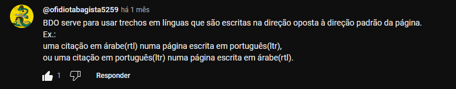

A tag <code> formata o texto em uma fonte mono-espaçada, ou seja, todos os caracteres possuem a mesma largura, tornando o texto mais fácil de ler.
É ideal para usar ao exemplificar códigos, por exemplo:
Um código JavaScript sem a formatação code: document.getElementById('teste')
Um código JavaScript com a formatação code: document.getElementById('teste')
A tag <pre> exibe o texto da forma em que foi escrito, onde espaços em brancos também são mantidos.
Por exemplo, se quiser mostrar um exemplo de código identado, pode-se utilizar a tag <pre>:
num = int(input('Digite um número'))
if num % 2 == 0:
print(f'O número {num} é PAR')
else:
print(f'O número {num} é IMPAR')
print('Fim do Programa')
A tag <q> é usada para citações simples e diretas, por exemplo:
Como diria Chapolin Colorado: Não contavam com minha astúcia!
Para citações completas, de forma mais formal, utiliza-se a tag <blockquote>. Com ela, a linha é quebrada e o conteúdo é deslocado à direita. Para exemplificar:
Como diria Sócrates:
Só sei que nada sei.
<blockquote> é possível utilizar o atributo cite, onde você poderá colocar o link de onde foi retirado a citação usada. Agora, caso deseje que a fonte seja visível no paragráfo, invés de utilizar cite como atributo, você pode utilizar ela como uma tag.
Um exemplo de como ficaria uma citação completa com referência:
Segundo Paul Singer:
Podemos distinguir pelo menos três significados do termo "economia". O primeiro é a qualidade [...]SINGER, Paul. O que é Economia. 7. ed. São Paulo: Contexto, 2014
Ao utilizar abreviações, podemos usar da tag <abbr> para criar um contexto de interação que ao passar o mouse em cima, irá exibir o nome completo da palavra abreviada. Por exemplo:
HTML.
Com a tag <bdo> é possível inverter a direção de um texto. Esta tag possui dois parâmetros utilizados com o atributo dir (direction, direção): ltr - que significa left to right, ou seja, inverte o texto que está na esquerda para a direita; e rtl - que inverte o texto que está na direita para a esquerda. Exemplos:
Sem a tag <bdo>: Olá, Mundo!
Com a tag <bdo dir="rtl"> : Olá, Mundo!
Com a tag <bdo dir="ltr"> : Olá, Mundo!
No caso do último exemplo, o texto continuou na ordem correta pois a origem - forma em que o texto foi escrito - é a mesma direção de destino - left to right / da esquerda para direita.
A primeira vista a tag pode parecer inútil, e de fato pode ser que talvez você nunca vá utilizar ela, porém ela tem vários usos como criação de texto para Teleprompt, leitura de tela espelhada, e o mais comum, para a exibição correta de frases em idiomas como árabe, hebraíco, entre outros, onde o texto é escrito da direita para a esquerda.
